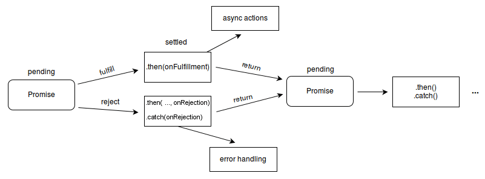

서론
Javascript의 Promise 객체에 대해서 정리를 해 보았습니다.
본론
Promise는 무엇일까?
Promise는 Javascript에서 비동기로 동작하는 액션을 관리할 때에 사용하는 함수 혹은 객체입니다. 로그를 찍어보아도 아래와 같이 표시됩니다.
console.log(Promise)
// ƒ Promise() { [native code] }
console.log(Promise.resolve())
// Promise {<fulfilled>: undefined}
만약 Promise를 사용하게 된다면 아래와 같이 사용할 수 있습니다.
const used = new Promise((resolve, reject) => {
resolve('나는 사용되었다..'); // 비동기 로직이라고 가정
});
used.then((text) => console.log('text:', text));
Promise 내부에서 비동기 로직을 사용하고, 로직이 완료되었을 때, resolve를 사용하여 used객체의 then이 실행될 수 있도록 설계할 수 있습니다. 이 방법을 사용한다면 API 통신 뿐만아니라, 배치 작업 등 비동기 작업을 수행할 수 있습니다.
resolve, reject, fulfilled와 같은 단어들이 보이는데, 이는 비동기를 위해 설계된 Promise가 가질 수 있는 상태와 연관이 있습니다. 이 Promise는 아래와 같이 3가지의 상태를 가지고 있습니다.
- pending:
pending은 비동기 액션이 시작되어서 종료되기 전까지의 상태를 의미합니다. - fulfilled:
fulfilled는 비동기 액션이 성공적으로 완료 되었을 때에 대한 상태를 의미합니다. - rejected:
rejected는 비동기 액션이 실패 혹은 에러로 인하여 종료되었을 때에 대한 상태를 의미합니다.
MDN에서 이러한 상태를 도표로 정리해둔 내용이 있어 첨부를 해보겠습니다.

이 도표에 대한 설명을 추가로 하자면, Promise의 Pending이 끝나면, 성공 시 fulfill, 실패 시 reject로 분기가 되어집니다. 이 두 상태 모두를 포괄하는 의미 즉, Promise가 어떤 상태로든 종료된 것을 Settled라고 이야기 합니다. 또한, 이 Promise는 성공(fulfill)하였을 때는 .then(callback)으로 성공 관련 로직을 실행할 수 있습니다. 실패(reject)하였을 때는 .then(_, callback)(then의 두 번째 파라미터), .catch(callback)으로 에러를 핸들링할 수 있습니다. 그리고 .then의 callback에서 return된 값을 채이닝을 이용하여 또 Promise 객체를 반환하고, 다시 .then을 사용할 수 있습니다.
Async/Await
Async/Await은 함수를 Promise를 반환하도록 만들어 주는 Javascript의 문법입니다. 아래와 같이 사용할 수 있습니다.
async function a() {
// 저는 비동기 로직이에요.
return 1;
return Promise.resolve(1)
}
const b = a();
console.log(b);
// Promise {<fulfilled>: 1}
위와 같이 a함수에서는 1을 return 해주었는데 실행결과를 로그로 찍어보면, Promise 객체가 반환되는 것을 볼 수 있습니다. 또한 Promise.resolve(1)을 반환하더라도 결과는 같습니다. 이것이 async 키워드가 해주는 역합입니다. async가 붙은 함수는 위와같이 동작합니다.
또한, 이 async 함수는 await 키워드를 사용할 수 있는 조건을 만들어주는데, 아래와 같이 사용할 수 있습니다.
async function a() {
// 저는 비동기 로직이에요.
// return 1;
return Promise.resolve(1)
}
async function b() {
const aa = await a();
return aa;
}
async 키워드가 포함된 함수 즉, async function은 함수 내부에서 await 키워드를 사용할 수 있도록 합니다. 이 await 키워드는 a함수가 settled된 상태까지 함수의 실행을 멈추어줍니다. 즉, b함수는 a함수가 settled 되기 전까지는 return 되어지지 않고, pending 상태를 유지합니다.
애매한 약속이 잡혔다
Promise.resolve('내가 1빠겠지?').then((res) => {
console.log('[가장 위에 있는 log]:', res);
});
new Promise((resolve) => {
setTimeout(() => {
resolve('나는 느림의 미학을 추구해');
}, 1000);
}).then((res) => {
console.log('[중간에 있는 log]:', res);
});
console.log('[가장 밑에 있는 log]:', '출발이 늦어도 괜찮아');
위 코드에 있는 console.log가 실행되는 순서를 한 번 생각해 보겠습니다. Promise.resolve는 사실상 Settled된 Promise 이기 때문에 바로 로그가 출력이 될 것을 기대하게 됩니다. 중간 로그는 물론 1초 뒤에 실행이 될거고요. 마지막에 그냥 찍은 로그는 그냥 바로 실행이 될 것 같습니다. 결과는 아래와 같이 출력 됩니다.
[가장 밑에 있는 log]: 출발이 늦어도 괜찮아
[가장 위에 있는 log]: 내가 1빠겠지?
[중간에 있는 log]: 나는 느림의 미학을 추구해
우선, 이렇게 실행되는 이유를 알기 위해서는 싱글 스레드로 동작되어지는 Javascript의 동작에 대해서 알아야할 것 같습니다. 다행히도 JavaScript Visualized - Promise Execution 영상에서 자세히 설명을 해주고 있네요. 해당 영상의 내용중 필요한 부분만 설명을 첨부해 보겠습니다.
위와 같이 실행되는 이유를 순서에 촛점을 두고 설명을 해 보겠습니다.
단, 배경지식으로 아래 세 가지만 주입식 인지로 받아드려주세요.
- Javascript에서는 모든 명령어가 실행되어지면 Call Stack이라고 하는 Stack 자료구조 형태로 모든 명령이 쌓입니다.
- Microtask Queue와 Task Queue가 있는데, Web API는 실행이 완료되면, 결과 값이 Task Queue로 이동됩니다. Promise.then에서 실행되는 내용은 Microtask Queue로 이동됩니다.
- Call Stack이 모두 실행되어서 비어진 경우에는 Microtask Queue에서 할일을 받아 온 다음에, Task Queue에서 다음 일을 받아온다. (Microtask Queue의 우선순위가 더 높습니다.)
- Javascript가 실행이 되면, 위 내용을 한 번 쭉 실행합니다.
- 그렇게 되면, Call Stack에는 Promise.resolve, new Promise, setTimeout, then, console.log([중간]), console.log(가장 밑) 등이 순서대로 쌓이게 됩니다.
- 그런다음에, Promise.resolve는 Microtask Queue로 이동이 되어 관리 됩니다.
- setTimeout은 WebAPI 영역에서 별도로 실행이 되어 1000ms 타이머를 동작 시킵니다.
- console.log(가장 밑)이 바로 실행이 되어집니다.
- Call Stack이 비었기 때문에, Microtask Queue의 내용인
console.log([가장 위])실행 명령이 Call Stack으로 이동합니다. - console.log([가장 위])가 실행됩니다.
- 1000ms가 지나면, Web API 영역에서 실행되어진 resolve가 Task Queue로 이동합니다.
- Call Stack이 버있기 때문에, Task Queue의 내용은 Call Stack으로 이동합니다.
- Call Stack에 있던
resolve('나는 느림의 미학을 추구해')가 실행되어집니다. - resolve는 settled가 되는 시점에 다시 Microtask Queue로 이동합니다.
- Call Stack이 버있기 때문에, Microtask Queue에 있는 내용은 Call Stack으로 이동합니다.
- then에 있던 내용인
console.log('[중간에 있는 log]:', '나는 느림의 미학을 추구해');가 실행됩니다.
복잡하지만, 이렇게 하면 위 결과대로 로그가 찍히는 이유를 알 수 있습니다.
결론
Promise의 상태, Async/Await 그리고 Promise의 동작 방식에 대해서 간단하게 작성해봤습니다. 설명이 충분치 않은 부분이 있다고 생각된다면, 아래의 참조의 링크에서 좀 더 자세한 설명을 보셔도 좋을 것 같습니다.